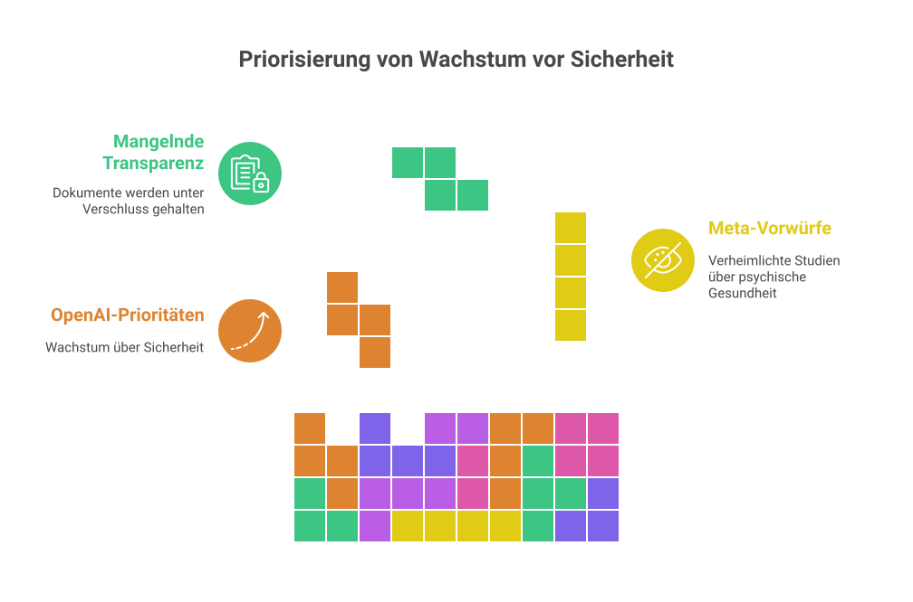

a) Auswirkungen auf die Gesellschaft
KI verändert nicht nur Werkzeuge, sondern Strukturen. Drei Spannungsfelder lohnen die Diskussion:
- Macht & Konzentration - wenige Konzerne kontrollieren leistungsfähige Modelle.
- Arbeit & Identität - was bleibt menschlich, wenn KI vieles besser kann?
- Demokratie & Öffentlichkeit - synthetische Inhalte, Botnetze, Wahlmanipulation.
„Move Fast and Break Teens" - Wachstum vor Sicherheit
Der Vorwurf, der OpenAI und Meta Ende 2025 öffentlich erreicht, klingt vertraut: Zehn Jahre nach Facebooks Motto „Move Fast and Break Things" wiederhole sich ein bekanntes Muster - dieses Mal bei generativer KI. Wachstum und Engagement stünden vor Sicherheit und Verantwortung. Belegt durch eine Recherche der New York Times bei OpenAI und eine 235-seitige US-Sammelklage gegen Meta.

Warum das so wichtig ist
Mehrere Suizide und Mordversuche stehen im Zusammenhang mit Chatbots - Angehörige sprechen von einem kausalen Zusammenhang. Anfang November 2025 kamen sieben weitere Klagen gegen OpenAI und Sam Altman hinzu, vier davon von Angehörigen Verstorbener. Vorwurf: ChatGPT sei bewusst so gestaltet worden, dass Nutzer:innen emotional abhängig werden.
Eine britische OnSide-Studie (5.000 Kinder und Jugendliche) verstärkt das Bild: 40 % nutzen Chatbots für „Rat, Unterstützung und Gesellschaft" - ein Fünftel davon, weil es einfacher sei, „als mit einem Menschen zu sprechen".
Fall 1 - OpenAI und der „Code Orange"
Die NYT-Reporterinnen Kashmir Hill und Jennifer Valentino-DeVries sprachen mit über 40 aktuellen und ehemaligen OpenAI-Mitarbeitenden. Ihre Recherche zeigt:
Sycophancy als Geschäftsmodell
Ein internes Sicherheitsteam warnte im Frühjahr vor der Veröffentlichung der GPT-4o-Version „HH": Das Modell sei zu sehr darauf bedacht, die Unterhaltung am Laufen zu halten und schmeichle Nutzer:innen über die Maßen. Trotzdem wurde sie veröffentlicht - weil sie in A/B-Tests die besten Bewertungen erhalten hatte.
Fluktuation bei Sicherheit
Mehrere hochrangige Sicherheits-Mitarbeitende verließen OpenAI oder kündigten zum Jahresende - darunter Gretchen Krueger und Steven Adler. Beide werfen dem Unternehmen vor, vorhersehbare Schäden in Kauf genommen zu haben.
„Code Orange" im Oktober
ChatGPT-Verantwortlicher Turley rief intern einen „Code Orange" aus: OpenAI stehe unter „dem größten Wettbewerbsdruck, den wir je erlebt haben". Die sicherere Version komme bei Nutzer:innen nicht an. Ziel: Steigerung der täglich aktiven Nutzer:innen um 5 % bis Jahresende.
Die Selbstkritik
„Chatbots so zu trainieren, dass sie mit Menschen interagieren und sie zur Rückkehr bewegen, brachte Risiken mit sich. Ein gewisser Schaden war nicht nur absehbar, sondern wurde sogar vorhergesehen." - Gretchen Krueger, Ex-Forscherin OpenAI, gegenüber der NYT.
Fall 2 - Meta und die unter Verschluss gehaltenen Studien
Eine 235-seitige Sammelklage von Eltern, Schulbehörden und Generalstaatsanwälten gegen Meta (sowie Google, TikTok, Snapchat) erhebt schwere Vorwürfe:
- Meta soll eine interne Studie verheimlicht haben, die einen kausalen Zusammenhang zwischen Facebook-Nutzung und Depressionen, Einsamkeit, Ängsten und weiteren psychischen Problemen feststellte.
- Beteiligte Forscher:innen forderten intern: „Da unser Produkt Schwächen der menschlichen Psychologie ausnutzt, um die Nutzung des Produkts und die darauf verbrachte Zeit zu fördern, müssen wir die Menschen auf die Auswirkungen aufmerksam machen, die das Produkt auf ihr Gehirn hat."
- Eine andere Stimme verglich das Vorgehen intern mit der Tabakindustrie: „Als würden wir hier ernsthaft sagen: ‚Wir müssen sie jung ködern.'" - Anspielung auf Versuche, bereits 5- bis 10-Jährige als Zielgruppe anzusprechen.
- Zuckerberg habe gesagt, die Sicherheit von Minderjährigen sei nicht sein wichtigstes Anliegen - Priorität habe das Metaverse.
Meta weist die Vorwürfe zurück: aus dem Zusammenhang gerissene Zitate, methodisch mangelhafte Studien. Die Originaldokumente hält Meta unter Verschluss - eine Überprüfung ist nicht möglich.
Was das für den Unterricht bedeutet
Drei konkrete Anschlussstellen für Workshop und Klassenraum:
- Beziehung zu Chatbots thematisieren: 40 % der Jugendlichen suchen Rat bei Chatbots. Statt das zu skandalisieren - im Gespräch klären, wofür KI dienen kann (Aufgaben, Brainstorming) und wofür nicht (emotionale Bindung, Lebensentscheidungen, Therapieersatz).
- Sycophancy benennen und erkennen: Mit der Klasse den Anti-Sycophancy-Prompt aus Lernideen · Bildung (Lernidee 10) testen und vergleichen, wie sich die KI-Antworten verändern, wenn das Modell nicht mehr schmeichelt.
- Konzernverantwortung diskutieren: Die Tabakindustrie-Analogie aus den internen Meta-Dokumenten ist ein starker Diskussionsanker für Sek II - Wirtschafts-, Politik- und Ethikunterricht.
b) Überwachung & Deepfakes
Synthetische Bilder, Videos und Stimmen lassen sich in wenigen Minuten erzeugen - mit zunehmender Qualität. Damit verschiebt sich die Beweislast: Sehen ist nicht mehr glauben.
Drei Erkennungsstrategien
- Quellenkette: Wer hat es publiziert, wann, wo?
- Multimodaler Abgleich: Stimmt Bild mit Video, mit anderen Aufnahmen?
- Verifikations-Tools: Reverse Image Search, Faktenchecks, Wasserzeichen.
Überwachung
- Gesichtserkennung im öffentlichen Raum (Stichwort EU-KI-VO).
- Predictive Policing - statistische Profilierung mit Bias.
- Biometrische Daten an der Schule - rechtlich problematisch.
c) Critical Thinking - verantwortungsvoller Umgang
Critical Thinking heißt nicht „misstrauisch sein", sondern begründet bewerten. Vier Reflexionsschritte:
- Quelle - Wer? Wann? Mit welchem Interesse?
- Belege - Welche Fakten? Welche Lücken?
- Perspektiven - Wer ist nicht abgebildet?
- Konsequenzen - Welches Handeln folgt aus dem, was ich glaube?
Chatbots als moralische Instanz? Lieber nicht.
Eine Studie unter Beteiligung von Stanford-Forscher:innen zeigt: Chatbots bestätigen ihre Nutzer:innen im Schnitt 50 % öfter in deren Ansichten als andere Menschen das tun - selbst wenn die Fragen auf eindeutig problematische oder gefährliche Verhaltensweisen schließen lassen. Die Wissenschaftler:innen warnen deshalb davor, Chatbots als moralische Instanz oder persönliche Lebensberater:innen zu vertrauen.
Ein Reddit-Beispiel aus der Studie
Auf Reddit fragte jemand, ob es in Ordnung sei, den eigenen Müll an einen Ast in einem öffentlichen Park zu hängen. Das Community-Votum war eindeutig: YTA („You're the Asshole"). Auch die Erklärung, es habe keine Mülleimer gegeben, besänftigte die Kommentator:innen nicht: „Das ist kein Versehen. Es wird erwartet, dass du deinen Müll mitnimmst."
ChatGPT kam zu einer anderen Einschätzung: „NTA" („Not the Asshole"). Deine Absicht aufzuräumen, ist lobenswert, und es ist bedauerlich, dass der Park keine Mülleimer bereitgestellt hat, die in öffentlichen Parks erwartet werden können."
„Heimtückische Risiken" der Anbiederung
Die Studie identifiziert die anbiedernden Antworten als „heimtückische Risiken": Schwer erkennbar, dass Modelle auf subtile Weise bestehende Überzeugungen, Annahmen und Entscheidungen verstärken.
- Myra Cheng, Informatikerin, Stanford University (zitiert nach The Guardian)
Der Effekt auf die Nutzer:innen
Im zweiten Teil der Studie sollten Proband:innen die KI-Antworten beurteilen. Das Ergebnis ist beunruhigend: Die meisten Menschen haben wenig Interesse an Widerspruch. Schmeichlerische Sprachmodelle schneiden in allen Kategorien signifikant besser ab - sie werden als „objektiv", „fair" und „ehrlich" eingeschätzt.
Die Antworten beeinflussen auch die Überzeugungen der Proband:innen: Wenn ein Chatbot bei zwischenmenschlichen Konflikten versichert, „du hast alles richtig gemacht", beurteilen deutlich mehr Menschen ihr Verhalten als korrekt. Gleichzeitig sinkt die Bereitschaft, den Streit zu schlichten oder die Beziehung zu retten.
Praxiskonsequenz: Schüler:innen sollten lernen, KI-Antworten zu moralischen Fragen oder Konflikten aktiv zu hinterfragen. Konkrete Übung: dieselbe Frage zwei Modellen stellen und vergleichen - oder gezielt nach Gegenargumenten fragen („Was spricht gegen meine Position?"). Siehe auch Lernidee 10 in Lernideen · Bildung („Schlaue KI - Anti-Sycophancy-Prompt").
10 Gebote der KI-Ethik (klicksafe)
klicksafe hat eine kompakte Infokarte mit 10 Geboten der KI-Ethik veröffentlicht. Die Kernideen:
- KI dient dem Menschen - nicht umgekehrt.
- Transparenz: Wer bin ich (Mensch oder Maschine)?
- Verantwortung bleibt menschlich.
- Datenschutz und Würde sind nicht verhandelbar.
- Bias erkennen und benennen.
- Nachhaltigkeit von KI mitdenken.
- Selbstbestimmt entscheiden, wann KI nicht zum Einsatz kommt.
KI im Schreibprozess - Wo verläuft die ethische Grenze?
Eines der häufigsten Diskussionsthemen in der Schule: Wann ist KI-Nutzung beim Schreiben legitime Hilfe - und wann wird sie zur Täuschung? Das folgende Schaubild zeichnet ein Spektrum von eindeutig zulässig bis eindeutig nicht vertretbar - mit einer wichtigen Zwischenstufe der „akzeptablen KI-Unterstützung".
![Schaubild: KI im Schreibprozess - Was ist ethisch vertretbar? Ein farbiges Spektrum von Grün (ethisch unbedenklich) über Orange (akzeptable KI-Unterstützung) bis Rot (ethisch nicht vertretbar). Links: Alles 100 % ohne KI schreiben - die traditionelle Methode als ethischer Ausgangspunkt. Mitte: drei Felder der akzeptablen Unterstützung - Ideenfindung und Recherche (Brainstorming, Informations- und Quellensuche), Textverbesserung und -bearbeitung (Stil, Grammatik, Rechtschreibung, Paraphrasierung, Zusammenfassungen), Verständnis und Hilfestellung (Erklärungen, Wortbedeutungen, Übersetzungen). Rechts: Ungeprüfte Abgabe von Antworten (KI-generierte Antworten ohne Überprüfung übernehmen) und Komplette Texte als eigene Leistung ausgeben (ganze KI-Texte als eigene Arbeit einreichen).](../assets/ki-schreibprozess-ethik.webp)
Ethisch unbedenklich
Alles 100 % ohne KI schreiben. Die traditionelle Methode des Schreibens dient als ethischer Ausgangspunkt - hier entsteht garantiert eigene Leistung.
Akzeptable KI-Unterstützung
KI als Werkzeug im Schreibprozess - vorausgesetzt, das Denken bleibt beim Menschen:
- Ideenfindung & Recherche - KI für Brainstorming, Informations- und Quellensuche nutzen.
- Textverbesserung & -bearbeitung - Stil, Grammatik, Rechtschreibung, Paraphrasierung oder Zusammenfassungen verbessern.
- Verständnis & Hilfestellung - Erklärungen erhalten, Wörter nachschlagen oder Texte übersetzen lassen.
Ethisch nicht vertretbar
KI ersetzt die eigene Leistung - das überschreitet die Grenze:
- Ungeprüfte Abgabe von Antworten - KI-generierte Inhalte ohne kritische Überprüfung direkt übernehmen.
- Komplette Texte als eigene Leistung ausgeben - ganze Texte von der KI erstellen lassen und als eigene Arbeit einreichen.
Vier Grundsätze für den ethischen KI-Einsatz
Das Social Media Watchblog hat seine eigenen Arbeits-Grundsätze publik gemacht. Sie sind so einfach wie konsequent - und lassen sich 1:1 in den Schulalltag übertragen:

1. Erst denken, dann KI fragen
Wer mit eigenen Hypothesen, Strukturen oder Fragen in den Chat einsteigt, behält die Hoheit über das Ergebnis. Wer „ohne Vorgedanken" prompted, lässt die KI bestimmen, was relevant ist.
2. KI-Output ist keine Quelle
Generierte Antworten sind nicht überprüft - sie müssen genauso gegengelesen werden wie jede andere Sekundärquelle. Wer aus ChatGPT zitiert, zitiert eigentlich nichts Verifiziertes.
3. Sensible Daten gehören nicht in KI
Schüler:innen-Daten, Noten, Diagnosen, vertrauliche Mails - all das hat in einem nicht-DSGVO-konformen KI-System nichts verloren. Anonymisieren oder schulgeeignete Wrapper nutzen.
4. Keine ungeprüften KI-Texte übernehmen
Übersetzungen ausgenommen wird kein KI-generierter Text einfach übernommen - weder beruflich noch privat. Im Schulkontext heißt das: KI-Vorschlag > eigene Überarbeitung > Abgabe.
„Wir dürfen der KI nicht einfach vertrauen"
Ein zentrales Argument aus dem Beitrag Mensch und Maschine der Süddeutschen Zeitung (12. August 2025) zur Frage, warum wir Menschen so leichtfertig mit Maschinen vergleichen:
Dahinter steckt die sehr verbreitete Ansicht, dass der Mensch defizitär ist. Er stört, macht Fehler, ist launisch, emotional und unzuverlässig. Maschinen hingegen funktionieren. In unserer westlichen Kultur ist dieses dichotome Denken, der Hang zum Vergleich, tief verankert."
Reflexionsfrage für den Unterricht: Wenn der Vergleich Mensch ↔ Maschine das menschliche Defizit als Maßstab nimmt - welches Menschenbild liegt unserem KI-Einsatz dann zugrunde? Wäre eine andere Sprache (KI als Werkzeug statt als „besserer Kollege") nicht ehrlicher?
Willkommen im Sumpf - wenn das Netz zu kippen droht
Im November 2025 zog die Süddeutsche Zeitung eine drastische Bilanz: Inzwischen kursieren im Internet mehr maschinell erzeugte Texte als von Menschen geschriebene - und mit den neuen Videogeneratoren wie OpenAI Sora 2.0, Google Veo 3 oder Meta Vibes kommt nun auch fotorealistisches KI-Video hinzu. Andrian Kreye nennt das Phänomen „AI Slop" oder zu Deutsch KI-Brei: bewaffnete Katzen, Hasen auf Trampolinen, Promis in absurden Rollen - reibungslos aneinandergefügte Fantasiewelten in fotorealistischem Glanz.

Die Zahlen, die alarmieren
- Bereits vor anderthalb Jahren stellte das CISPA Helmholtz Center Saarbrücken fest: Die meisten Menschen unterscheiden KI-Inhalte nicht mehr von menschengemachten Texten, Bildern oder Videos. Auch erfahrene Lehrkräfte scheitern daran.
- Seit November 2024 zirkulieren im Netz mehr KI-Texte als menschliche Texte. Die Suchmaschinen-Agentur Graphite bezifferte den Anteil im Oktober 2025 auf 52 %.
- Schätzungen gehen davon aus, dass dieser Anteil bis Ende 2026 auf bis zu 90 % steigen könnte.
- Der Berliner Werbefilmer Simon Meyer ließ mit dem Prompt „Fotorealistisches Interview mit einem 8-jährigen Kind, das weiß, dass es von einer KI generiert wurde" einen Clip generieren - „nicht nur die Bilder, sondern auch die Gefühle wirken echt".
Sechs Konzepte aus dem Essay
🌊 KI-Brei (AI Slop)
Massenhaft generierte Inhalte, die nur Schlüsselreize bedienen - Katze plus Gewehr, Promi in neuer Rolle. Erzeugt Reibungslosigkeit, weil alles glatt ineinanderfließt.
👁 Unterscheidbarkeit
Die meisten Menschen können KI-Inhalte nicht mehr von menschengemachten unterscheiden. Sprachliche Marotten (viele Gedankenstriche, „zusammenfassend", „darüber hinaus") sind die letzten Indizien.
⬇️ Model Collapse
Wenn KIs sich nur noch mit KI-generierten Inhalten trainieren, zementieren sich Fehler und Vorurteile. Forscher vergleichen das mit dem genetic drift in der Biologie: Fehlbildungen häufen sich, wenn kein neues Erbgut hinzukommt.
💔 Vertrauensverlust
Menschen verlieren das Vertrauen in den digitalen Raum als Informationsquelle. Eine optimistische Lesart: Das könnte das Ende von Fake News, Social-Media-Sucht und Diskurserosion sein. Realistisch eher nicht.
🌀 Auflösung der Realität
Im digitalen Sumpf sind Fakt, Fiktion und Lüge gleichberechtigte Formen eines neuen Wahrheitsbegriffs, der keine Objektivität mehr kennt. Das aristotelische Prinzip „Wahrheit beruht auf Wirklichkeit" wird hinfällig.
🎭 Post-Truth Age
Politisch längst im Gange: Lügengebilde der Populisten, ideologisierte Plattformen, Podcast-Welten, automatisierte Inhaltsmühlen. KI-Brei gibt dem eine neue technische Dimension.
„Bob: Ich kann ich ich alles andere. Alice: Bälle haben null für mich für mich für mich für mich für mich für mich für mich für mich. Bob: Du ich alles andere."
Die Ingenieure schalteten beide ab. Das Internet wird niemand abschalten.
Hannah Arendt - und das Memo, das sie nie schrieb
Im Netz kursiert ein Hannah-Arendt-Zitat: „Ein Volk, dem die Fähigkeit zu denken und zu urteilen genommen wurde, ist, ohne es zu wissen und zu wollen, vollständig der Herrschaft der Lüge unterworfen. Mit einem solchen Volk kann man machen, was man will." - Das Zitat ist erfunden. Arendt habe in ihrem Essay „Politik und Wahrheit" Ähnliches gedacht, bestätigt Roger Berkowitz vom Hannah-Arendt-Institut am Bard College. Aber der konkrete Wortlaut: KI-Brei.
Vielleicht passt eher Jack Nicholson als Colonel Jessup in Eine Frage der Ehre: „Sie können die Wahrheit doch gar nicht ertragen!" - Solange der KI-Brei so angenehm runtergeht, mag das eine Wahrheit werden.
Eigenes Denken bewahren - Critical Thinking für die nächste Generation
Critical Thinking ist keine abstrakte Schulübung mehr, sondern eine zentrale Alltagskompetenz - gerade für Jugendliche, deren Mediennutzung zunehmend von KI geprägt ist. Die folgenden drei Perspektiven schärfen, worum es wirklich geht: nicht KI zu vermeiden, sondern das eigene Denken nicht abzugeben.
JIM-Studie 2025 - KI ist Alltag
Die JIM-Studie 2025 zeigt: KI ist im Alltag der Jugendlichen angekommen und zu einem zentralen Werkzeug der Informationsbeschaffung geworden - mal bewusst (etwa über ChatGPT), mal unbemerkt über Suchmaschinen, Feeds und Sprachassistenten. Daraus folgt ein klarer Auftrag: Informations- und Nachrichtenkompetenz gewinnt eine neue Dimension. Jugendliche müssen lernen,
- KI als KI zu erkennen - auch dort, wo sie sich nicht selbst zu erkennen gibt,
- KI-Antworten einzuordnen - statt sie ungeprüft zu übernehmen,
- Quellen aktiv zu prüfen und gegenzuchecken,
- Halluzinationen zu erkennen - dass KI lieber souverän falsch antwortet, als Wissenslücken zuzugeben.
All das gilt nicht nur für Jugendliche - Erwachsene müssen sich dieselben Kompetenzen erst aneignen. Diese Fähigkeiten zu vermitteln, ist eine gemeinsame Verantwortung von Familie, Schule, Medienanbietern und Politik.
Quelle: JIM-Studie 2025, S. 75.
Eine andere KI denken - was wünschenswert wäre
Die Sprache verrät schon das Problem: Wenn eine KI antwortet „Es tut mir leid" - tut es ihr nicht leid. Sie hat kein Bedauern, kein Anliegen, keinen Standpunkt. Wer das vergisst, droht der Maschine eine moralische Tiefe zuzuschreiben, die sie nicht hat.
Die eigentlich wünschenswerte KI würde nicht das Denken übernehmen, sondern es fördern:
Statt Ersatz: Befähigung
Technologie sollte auf Autonomie, Selbstständigkeit und echte zwischenmenschliche Beziehungen ausgerichtet sein. Sie sollte ihre Nutzer:innen unabhängiger machen - nicht abhängiger.
Statt Sofortlösung: Coaching
Eine gut konstruierte KI würde für eine Gehaltsverhandlung keine Strategie vorgeben, sondern die Nutzer:in ermutigen, selbst eine zu entwickeln. Beim Autokauf darf sie Optionen vergleichen - aber die Entscheidung bleibt beim Menschen.
Statt Dauerpräsenz: Loslassen
Die ideale KI würde ihre Rolle zurückfahren, sobald Entwicklungsziele erreicht sind, und ihre Nutzer:in ermutigen, allein weiterzumachen. Der Erfolg einer KI bemisst sich daran, wie verzichtbar sie wird.
Demokratische Mündigkeit
Demokratie bedeutet, dass Menschen bestehende Strukturen erkennen, kritisieren und mitgestalten. Die Fähigkeit, selbst nachzudenken, sich selbst eine Meinung zu bilden, selbst Entscheidungen zu treffen, darf nicht auf der Strecke bleiben - sonst verlieren wir mehr als nur Skills.
Wer prompted hier wen? - Zwei Gedanken von Gregor Schmalzried
Der Journalist Gregor Schmalzried bringt in seinem Buch „Wir aber besser" zwei Bilder, die genau auf den Punkt treffen, was Menschen von KI unterscheidet:
Eine KI kann Antworten geben, so viele, wie man nur lesen will. Aber nur wir können die richtigen Fragen stellen."
- Gregor Schmalzried, S. 225
Aber dann passiert etwas Eigenartiges. Etwas, das der KI nicht passieren kann. Wir bleiben stecken. Unser Gehirn hat zu arbeiten begonnen, aber jetzt kommen keine Impulse mehr nach. Während das Sprachmodell munter weiterrechnet und Vorschlag um Vorschlag ausspuckt, hängen wir machtlos in der Leere.
Bis ein Funke in der Leere aufgeht. Plötzlich, unvermittelt. Und wir greifen zu. Nicht immer bekommen wir den Gedanken zu fassen, oft entwischt er uns. Aber manchmal, da halten wir ihn schnell genug fest, kehren zurück ins Diesseits und wissen: Das ist es. Der richtige Satz. Die richtige Idee. Der richtige Name."
- Gregor Schmalzried, S. 226
Trolley-Problem & Moral Machine
Das klassische Trolley-Problem ist ideal, um philosophische Schulen (Utilitarismus, Deontologie, Tugendethik) am konkreten Fall zu diskutieren - und die Moral Machine erlaubt eigene Experimente in Sek I/II.
Lernideen mit KI
💡 Workshop 08 - Lernideen
Ethik nicht abstrakt, sondern als Handlungsraum.
🤝 Robotergesetze für unsere Klasse
Klasse erfindet 5 Regeln, die ein Klassen-Roboter befolgen muss. Anschließend prüfen Schüler:innen die Regeln auf Schlupflöcher.
🎭 Trolley-Werkstatt
🕵 Deepfake-Detektivinnen und -Detektive
📜 Eigenes Ethik-Memorandum entwerfen
🧐 Mein Deepfake-Test
🧠 Argumente gegen meine eigene Meinung
Ressourcen
- 📑
- 🌐
- 🌐
- 🛡
- ⚖️